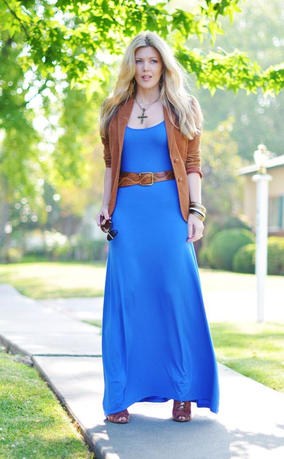
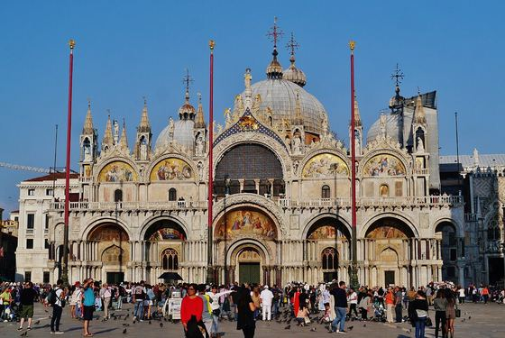
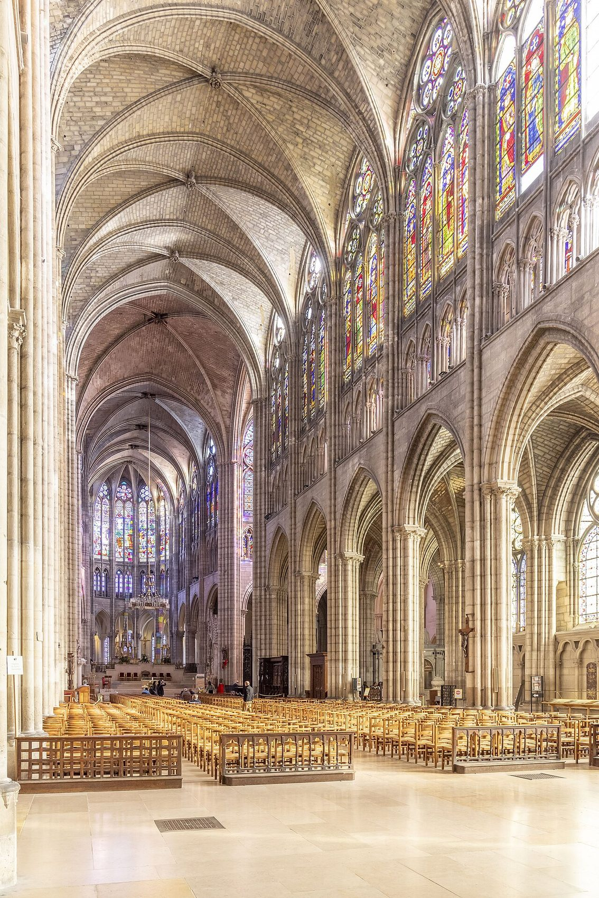
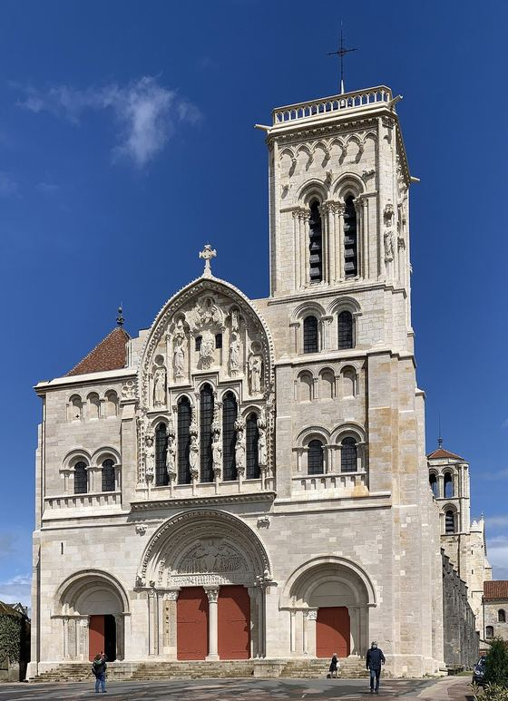

A Catholic Journal of Style and Beauty
The Beauty of Cathedrals in Everyday Fashion
From the marble of Rome’s great basilicas to the stained glass of Gothic cathedrals, sacred architecture offers an extraordinary vocabulary of color, texture, and form. Via Pulchritudinis draws inspiration from the world’s great Catholic cathedrals, basilicas, and shrines, translating their architectural beauty into contemporary personal style.
Six Ways In
Begin with the lookbook, or start with the ideas behind it. Each part of the journal stands on its own.
- I

The Lookbook
Fifty churches, each with its own palette and a contemporary outfit.
- II

How It Works
From stone and glass to five colors to a wardrobe.
- III

The Liturgical Year
The colors of the Church’s seasons, worn lightly.
- IV

Beauty & Faith
What the popes and the Church have said about beauty and dress.
- V

St. Pier Giorgio
The saint who dressed well and gave his clothes away.
- VI

The Directory
Catholic makers, stylists, publications, and books.
Background, Cosmatesque pavement, Santa Maria Maggiore. Photo by Nicholas Hartmann · CC BY-SA 4.0 · source
Sacred Spaces. Personal Style.
Every church has its own visual language. A few of the fifty looks, from Siena’s striped marble to the green gorge of Las Lajas. All fifty looks

Restored and reopened in December 2024. Pale limestone, a little gold, and colored light from the glass. A palette can be that simple.
Photo by Ibex73 · CC BY 4.0 · source